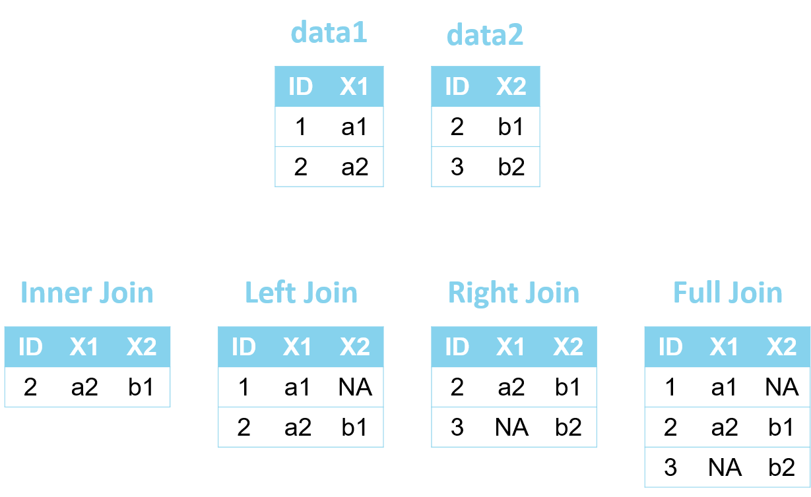

Data Cleaning
Messy data vs tidy data
The data set that you have, is often not ready to perform analyses on. You will need to perform some steps to clean up your data.
Be aware that this can be a time consuming task! The amount of time and code you will spend on data cleaning, can be a lot larger than the actual analysis.
Remember that R solely works with syntax. This means that you cannot adjust data manually and you will always have code to reproduce your results.
So, if the source data file gets adjusted slightly - say new patients are added, or some measurements are corrected - you just run your code and all your data preparation steps are performed automatically!
First of all we need to make sure data is in a tidy format. Tidy format:
Make sure that your data is structured so that:
Each variable forms a column
Each observation forms a row
Each cell is a single measurement
Tip
If possible; make sure you already think about your analysis when collecting the data. A protocol and statistical analysis plan are good ways to pre-specify your outcomes and variables. This way, you will need less data cleaning steps and save a lot of time.
Prepare data set for analysis
First look of your data
Let’s explore a data set.
We will use a standard data set available in R (mtcars). Name this data set “data”.
data(mtcars)
data <- mtcarsWith the function head, the first 6 rows are printed. Here we can check the names of the variables and the first entries.
head(data) mpg cyl disp hp drat wt qsec vs am gear carb
Mazda RX4 21.0 6 160 110 3.90 2.620 16.46 0 1 4 4
Mazda RX4 Wag 21.0 6 160 110 3.90 2.875 17.02 0 1 4 4
Datsun 710 22.8 4 108 93 3.85 2.320 18.61 1 1 4 1
Hornet 4 Drive 21.4 6 258 110 3.08 3.215 19.44 1 0 3 1
Hornet Sportabout 18.7 8 360 175 3.15 3.440 17.02 0 0 3 2
Valiant 18.1 6 225 105 2.76 3.460 20.22 1 0 3 1The number of rows can be adjusted.
head(data, 3) mpg cyl disp hp drat wt qsec vs am gear carb
Mazda RX4 21.0 6 160 110 3.90 2.620 16.46 0 1 4 4
Mazda RX4 Wag 21.0 6 160 110 3.90 2.875 17.02 0 1 4 4
Datsun 710 22.8 4 108 93 3.85 2.320 18.61 1 1 4 1tail reports the last 6 rows of the data set
tail(data) mpg cyl disp hp drat wt qsec vs am gear carb
Porsche 914-2 26.0 4 120.3 91 4.43 2.140 16.7 0 1 5 2
Lotus Europa 30.4 4 95.1 113 3.77 1.513 16.9 1 1 5 2
Ford Pantera L 15.8 8 351.0 264 4.22 3.170 14.5 0 1 5 4
Ferrari Dino 19.7 6 145.0 175 3.62 2.770 15.5 0 1 5 6
Maserati Bora 15.0 8 301.0 335 3.54 3.570 14.6 0 1 5 8
Volvo 142E 21.4 4 121.0 109 4.11 2.780 18.6 1 1 4 2Other useful functions for the first glimpse of your data set:
View(data)View opens the data set
dim(data)[1] 32 11str(data)'data.frame': 32 obs. of 11 variables:
$ mpg : num 21 21 22.8 21.4 18.7 18.1 14.3 24.4 22.8 19.2 ...
$ cyl : num 6 6 4 6 8 6 8 4 4 6 ...
$ disp: num 160 160 108 258 360 ...
$ hp : num 110 110 93 110 175 105 245 62 95 123 ...
$ drat: num 3.9 3.9 3.85 3.08 3.15 2.76 3.21 3.69 3.92 3.92 ...
$ wt : num 2.62 2.88 2.32 3.21 3.44 ...
$ qsec: num 16.5 17 18.6 19.4 17 ...
$ vs : num 0 0 1 1 0 1 0 1 1 1 ...
$ am : num 1 1 1 0 0 0 0 0 0 0 ...
$ gear: num 4 4 4 3 3 3 3 4 4 4 ...
$ carb: num 4 4 1 1 2 1 4 2 2 4 ...Obtain the variable names
names(data) [1] "mpg" "cyl" "disp" "hp" "drat" "wt" "qsec" "vs" "am" "gear"
[11] "carb"Rename variables
In case there are inconvenient names in your variables, change them:
names(data)[names(data) == "carb"] <- "CARB"With this, we rename carb to CARB.
Important
Remember: never use spaces or special characters in variable names!
Tip
Use unique but short names for your variables (and data sets)
This variable in a test data set is named very inconvenient, because there are spaces in the name:
names(test) [1] "miles per gallon" "cyl" "disp" "hp"
[5] "drat" "wt" "qsec" "vs"
[9] "am" "gear" "CARB" test$`miles per gallon` [1] 21.0 21.0 22.8 21.4 18.7 18.1 14.3 24.4 22.8 19.2 17.8 16.4 17.3 15.2 10.4
[16] 10.4 14.7 32.4 30.4 33.9 21.5 15.5 15.2 13.3 19.2 27.3 26.0 30.4 15.8 19.7
[31] 15.0 21.4Better rename it:
names(test)[names(test) == "miles per gallon"] <- "mpg"Change type of variable
The type of your variable can be changed.
- From
numerictofactor
Use variable vs, which is a numeric dummy variable (0/1).
str(data$vs) num [1:32] 0 0 1 1 0 1 0 1 1 1 ...Change it to a factor with as.factor(). (factor() is also possible)
data$vs_factor <- as.factor(data$vs)
data$vs_factor [1] 0 0 1 1 0 1 0 1 1 1 1 0 0 0 0 0 0 1 1 1 1 0 0 0 0 1 0 1 0 0 0 1
Levels: 0 1str(data$vs_factor) Factor w/ 2 levels "0","1": 1 1 2 2 1 2 1 2 2 2 ...- From
factortonumeric
Change it back to numeric, with as.numeric().
data$vs_numeric <- as.numeric(data$vs_factor)
data$vs_numeric [1] 1 1 2 2 1 2 1 2 2 2 2 1 1 1 1 1 1 2 2 2 2 1 1 1 1 2 1 2 1 1 1 2str(data$vs_numeric) num [1:32] 1 1 2 2 1 2 1 2 2 2 ...Notice how the values are now 1 and 2 instead of 0 and 1. This is because in vs_factor the labels are 0 and 1, but the underlying values were changed to 1 and 2. To solve this we use the function paste0. Now as.numeric() takes the labels as values for the new numeric variable.
data$vs_numeric <- as.numeric(paste0(data$vs_factor))
data$vs_numeric [1] 0 0 1 1 0 1 0 1 1 1 1 0 0 0 0 0 0 1 1 1 1 0 0 0 0 1 0 1 0 0 0 1str(data$vs_numeric) num [1:32] 0 0 1 1 0 1 0 1 1 1 ...Round variables
The function round() rounds variables to the specified number of digits. The default is 0
round(data$wt) [1] 3 3 2 3 3 3 4 3 3 3 3 4 4 4 5 5 5 2 2 2 2 4 3 4 4 2 2 2 3 3 4 3round(data$wt, digits = 1) [1] 2.6 2.9 2.3 3.2 3.4 3.5 3.6 3.2 3.1 3.4 3.4 4.1 3.7 3.8 5.2 5.4 5.3 2.2 1.6
[20] 1.8 2.5 3.5 3.4 3.8 3.8 1.9 2.1 1.5 3.2 2.8 3.6 2.8Similar functions are ceiling() and floor(). Can you guess what they do?
ceiling(data$wt) [1] 3 3 3 4 4 4 4 4 4 4 4 5 4 4 6 6 6 3 2 2 3 4 4 4 4 2 3 2 4 3 4 3floor(data$wt) [1] 2 2 2 3 3 3 3 3 3 3 3 4 3 3 5 5 5 2 1 1 2 3 3 3 3 1 2 1 3 2 3 2Transform variables
A new variable can be added to the data set, based on the values of an existing variable. For this we use the $ symbol.
Some examples:
data$cyl2 <- data$cyl+2
data$hp10 <- data$hp/10
data$cyl2_hp10 <- data$cyl2 * data$hp10
head(data[, c("cyl", "hp","cyl2", "hp10", "cyl2_hp10")]) cyl hp cyl2 hp10 cyl2_hp10
Mazda RX4 6 110 8 11.0 88.0
Mazda RX4 Wag 6 110 8 11.0 88.0
Datsun 710 4 93 6 9.3 55.8
Hornet 4 Drive 6 110 8 11.0 88.0
Hornet Sportabout 8 175 10 17.5 175.0
Valiant 6 105 8 10.5 84.0Make a subset of your data
Remove observations with missings (NA) in “mpg” and “cyl”
data2 <- subset(data, !is.na(data$mpg) & !is.na(data$cyl))
Tip
Create a new data set with a new name. Otherwise you might lose important information in your data.
�
Make a new data set, including only mpg values > 20. (Don’t forget the comma in the code!)
data2 <- data[data$mpg > 20, ]�
Remove duplicates
This can be used if there are multiple measurement per patient, but you want to keep only the first.
data_short <- data[!duplicated(data$gear),]�
Make a subset: Remove variables
data2 <- data[, -c(1, 2)]Or
data2 <- subset(data, select = -c(mpg, cyl))Make a subset: Keep variables
data2 <- data[, c("mpg", "cyl")]Or:
data2 <- subset(data, select = c(mpg, cyl))�
Sort data
data2 <- data[order(data$mpg),]
head(data2) mpg cyl disp hp drat wt qsec vs am gear CARB
Cadillac Fleetwood 10.4 8 472 205 2.93 5.250 17.98 0 0 3 4
Lincoln Continental 10.4 8 460 215 3.00 5.424 17.82 0 0 3 4
Camaro Z28 13.3 8 350 245 3.73 3.840 15.41 0 0 3 4
Duster 360 14.3 8 360 245 3.21 3.570 15.84 0 0 3 4
Chrysler Imperial 14.7 8 440 230 3.23 5.345 17.42 0 0 3 4
Maserati Bora 15.0 8 301 335 3.54 3.570 14.60 0 1 5 8
vs_factor vs_numeric cyl2 hp10 cyl2_hp10
Cadillac Fleetwood 0 0 10 20.5 205
Lincoln Continental 0 0 10 21.5 215
Camaro Z28 0 0 10 24.5 245
Duster 360 0 0 10 24.5 245
Chrysler Imperial 0 0 10 23.0 230
Maserati Bora 0 0 10 33.5 335�
Longitudinal data
With repeated measures, data can be in long format or wide format.
Wide format:

Long format:

In wide format, the repeatedly measured variable has a new column for each measurement. In the long format, these measurements are placed in new rows. In the long format, each patient/observation will have multiple rows.
Here is an example of a dataset in long format:
head(Orthodont, 10)Grouped Data: distance ~ age | Subject
distance age Subject Sex
1 26.0 8 M01 Male
2 25.0 10 M01 Male
3 29.0 12 M01 Male
4 31.0 14 M01 Male
5 21.5 8 M02 Male
6 22.5 10 M02 Male
7 23.0 12 M02 Male
8 26.5 14 M02 Male
9 23.0 8 M03 Male
10 22.5 10 M03 MaleEach subject (M01, M02, etc.) has 4 rows.
It depends on the analysis, which format is preferred and we might want to use this data in wide format. Use the function dcast() from the data.table package.
library(data.table)
Orthodont_w <- dcast(setDT(Orthodont), Subject + Sex ~ age, value.var = "distance")SubjectandSexare measured only at baselineageindicates when the repeated measure is measureddistanceis the value of this measurement
setDT() is needed to make a data.table out of your data. This can be seen as an improved version of a data.frame object.
head(Orthodont_w)Key: <Subject, Sex>
Subject Sex 8 10 12 14
<ord> <fctr> <num> <num> <num> <num>
1: M16 Male 22.0 21.5 23.5 25.0
2: M05 Male 20.0 23.5 22.5 26.0
3: M02 Male 21.5 22.5 23.0 26.5
4: M11 Male 23.0 23.0 23.5 25.0
5: M07 Male 22.0 22.0 24.5 26.5
6: M08 Male 24.0 21.5 24.5 25.5Notice how the variables age and distance have been replaced with their values.
If I start with a data set in wide format, but need to transform it to long format, I use the function melt() (also from data.table).
Orthodont_L <- melt(setDT(Orthodont_w), id = c("Subject", "Sex"),
measure =c("8", "10", "12", "14"),
value.name = "distance",
variable.name = "age")iddenotes the variables that are only measured once (at baseline)measureare the variables that you want to stackvalue.namewill be the variable name for the repeatedly measured variablevariable.namewill denote which measurement it is (age of patient)
head(Orthodont_L) Subject Sex age distance
<ord> <fctr> <fctr> <num>
1: M16 Male 8 22.0
2: M05 Male 8 20.0
3: M02 Male 8 21.5
4: M11 Male 8 23.0
5: M07 Male 8 22.0
6: M08 Male 8 24.0It is possible to reshape with multiple repeated measurements. Here is an example of data where ferritin (FER) and creatinin (CREA) are measured twice.
ID FER1 CREA1 FER2 CREA2
1 A 44 0.92 133 1.17
2 B 293 1.02 258 1.45
3 C 164 1.22 38 0.96
4 D 90 0.85 149 1.04The code below reshapes the data to long format
dw.long <- melt(setDT(dw), id = "ID",
measure=list(c("FER1", "FER2"), c("CREA1", "CREA2")),
value.name=c('FER', 'CREA'),
variable.name = "Time")
dw.long ID Time FER CREA
<char> <fctr> <int> <num>
1: A 1 44 0.92
2: B 1 293 1.02
3: C 1 164 1.22
4: D 1 90 0.85
5: A 2 133 1.17
6: B 2 258 1.45
7: C 2 38 0.96
8: D 2 149 1.04The function patterns can be used if my repeatedly measured variables are measured with high frequency. By using patterns("age"), all variables with age are stacked.
Key: <Subject, Sex>
Subject Sex age_8 age_10 age_12 age_14
<ord> <fctr> <num> <num> <num> <num>
1: M16 Male 22.0 21.5 23.5 25.0
2: M05 Male 20.0 23.5 22.5 26.0
3: M02 Male 21.5 22.5 23.0 26.5
4: M11 Male 23.0 23.0 23.5 25.0
5: M07 Male 22.0 22.0 24.5 26.5
6: M08 Male 24.0 21.5 24.5 25.5dw.long <- melt(setDT(Orthodont_w), id = c("Subject", "Sex"),
measure = patterns("age"),
value.name = "distance",
variable.name = "age")
head(dw.long, 10) Subject Sex age distance
<ord> <fctr> <fctr> <num>
1: M16 Male age_8 22.0
2: M05 Male age_8 20.0
3: M02 Male age_8 21.5
4: M11 Male age_8 23.0
5: M07 Male age_8 22.0
6: M08 Male age_8 24.0
7: M03 Male age_8 23.0
8: M12 Male age_8 21.5
9: M13 Male age_8 17.0
10: M14 Male age_8 22.5Merge data sets
Data sets can be combined in different ways.
- Add new observations (same variables)
- Add new variables (same observations)
- Complex combining
Let us simulate a few separate data sets. With this code you can replicate the analyses.
set.seed(61) # To obtain the exact same numbers each time.
ID <- 1:20
Center <- c(rep("Center 1",10), rep("Center 2", 10))
BMI <- round(rnorm(20, mean = 25, sd = 3))
CRP <- round(rnorm(20, mean = 80, sd = 30))
Status <- sample(c("ICU", "Hospital", "Deceased"), 20, replace = T)
df_1 <- data.frame(ID = ID[1:10], Center = Center[1:10], BMI = BMI[1:10],
CRP = CRP[1:10])
df_2 <- data.frame(ID = ID[11:20], Center = Center[11:20], BMI = BMI[11:20],
CRP = CRP[11:20])
df_3 <- data.frame(ID = ID, Status = Status)
df_4 <- data.frame(ID = c(ID[-c(5, 10, 15)],21:25), Status = c(Status[-c(5, 10, 15)],
sample(c("ICU", "Hospital", "Deceased"), 5, replace = T)))Add new observations
Data df_1 and df_2 represent data from two centers (Center 1 and Center 2). Both data sets have 10 observations and 2 baseline variables (BMI and CRP).
df_1 ID Center BMI CRP
1 1 Center 1 24 84
2 2 Center 1 24 71
3 3 Center 1 20 63
4 4 Center 1 26 109
5 5 Center 1 21 86
6 6 Center 1 24 105
7 7 Center 1 27 96
8 8 Center 1 27 64
9 9 Center 1 29 67
10 10 Center 1 24 105df_2 ID Center BMI CRP
1 11 Center 2 21 117
2 12 Center 2 21 40
3 13 Center 2 26 88
4 14 Center 2 31 40
5 15 Center 2 21 128
6 16 Center 2 20 57
7 17 Center 2 26 135
8 18 Center 2 27 85
9 19 Center 2 27 108
10 20 Center 2 22 48We can paste them together with the function merge(). Create a new data set called data_baseline.
data_baseline <- merge(df_1, df_2, all = TRUE)
str(data_baseline)'data.frame': 20 obs. of 4 variables:
$ ID : int 1 2 3 4 5 6 7 8 9 10 ...
$ Center: chr "Center 1" "Center 1" "Center 1" "Center 1" ...
$ BMI : num 24 24 20 26 21 24 27 27 29 24 ...
$ CRP : num 84 71 63 109 86 105 96 64 67 105 ...data_baseline ID Center BMI CRP
1 1 Center 1 24 84
2 2 Center 1 24 71
3 3 Center 1 20 63
4 4 Center 1 26 109
5 5 Center 1 21 86
6 6 Center 1 24 105
7 7 Center 1 27 96
8 8 Center 1 27 64
9 9 Center 1 29 67
10 10 Center 1 24 105
11 11 Center 2 21 117
12 12 Center 2 21 40
13 13 Center 2 26 88
14 14 Center 2 31 40
15 15 Center 2 21 128
16 16 Center 2 20 57
17 17 Center 2 26 135
18 18 Center 2 27 85
19 19 Center 2 27 108
20 20 Center 2 22 48data_baseline now has all 20 observations.
Important
The function rbind() can also be used, because this combines by pasting rows. You have to be careful to have the exact same variable names.
Add variables
For all 20 cases, a specific outcome (Status) is collected in a different data set (df_3)
head(df_3) ID Status
1 1 ICU
2 2 Deceased
3 3 ICU
4 4 ICU
5 5 Deceased
6 6 DeceasedWe want to add the status to data_baseline. For this, we use the function merge() again.
data_complete <- merge(data_baseline, df_3, all = TRUE)
str(data_complete)'data.frame': 20 obs. of 5 variables:
$ ID : int 1 2 3 4 5 6 7 8 9 10 ...
$ Center: chr "Center 1" "Center 1" "Center 1" "Center 1" ...
$ BMI : num 24 24 20 26 21 24 27 27 29 24 ...
$ CRP : num 84 71 63 109 86 105 96 64 67 105 ...
$ Status: chr "ICU" "Deceased" "ICU" "ICU" ...data_complete ID Center BMI CRP Status
1 1 Center 1 24 84 ICU
2 2 Center 1 24 71 Deceased
3 3 Center 1 20 63 ICU
4 4 Center 1 26 109 ICU
5 5 Center 1 21 86 Deceased
6 6 Center 1 24 105 Deceased
7 7 Center 1 27 96 ICU
8 8 Center 1 27 64 Hospital
9 9 Center 1 29 67 Deceased
10 10 Center 1 24 105 Hospital
11 11 Center 2 21 117 ICU
12 12 Center 2 21 40 Hospital
13 13 Center 2 26 88 ICU
14 14 Center 2 31 40 Deceased
15 15 Center 2 21 128 Deceased
16 16 Center 2 20 57 ICU
17 17 Center 2 26 135 Hospital
18 18 Center 2 27 85 Hospital
19 19 Center 2 27 108 Hospital
20 20 Center 2 22 48 ICU
Important
We can also use cbind() to add variables. Be very careful that your observations are in the exact same order. The function cbind does not match, but simply pastes variables to your data set.
Complex merging
Sometimes combining data sets is more complicated. In data1 and data2 examples below, there are differences in variables, but also cases. They can be merged in four different ways. Think beforehand which way is desirable for your analyses.

The corresponding code to the four ways is:
data_inner <- merge(data1, data2, by = "ID") # Inner join
data_left <- merge(data1, data2, by = "ID", all.x = TRUE) # Left join
data_right <- merge(data1, data2, by = "ID", all.y = TRUE) # Right join
data_full <- merge(data1, data2, by = "ID", all = TRUE) # Full joinSay, we have to repeat the previous merging: we have the data data_baseline with our 20 observations and baseline covariates. The end point is in a separate data set (df_4), but now it does not include the same set of observations (some IDs are missing and others are extra).
data_baseline ID Center BMI CRP
1 1 Center 1 24 84
2 2 Center 1 24 71
3 3 Center 1 20 63
4 4 Center 1 26 109
5 5 Center 1 21 86
6 6 Center 1 24 105
7 7 Center 1 27 96
8 8 Center 1 27 64
9 9 Center 1 29 67
10 10 Center 1 24 105
11 11 Center 2 21 117
12 12 Center 2 21 40
13 13 Center 2 26 88
14 14 Center 2 31 40
15 15 Center 2 21 128
16 16 Center 2 20 57
17 17 Center 2 26 135
18 18 Center 2 27 85
19 19 Center 2 27 108
20 20 Center 2 22 48df_4 ID Status
1 1 ICU
2 2 Deceased
3 3 ICU
4 4 ICU
5 6 Deceased
6 7 ICU
7 8 Hospital
8 9 Deceased
9 11 ICU
10 12 Hospital
11 13 ICU
12 14 Deceased
13 16 ICU
14 17 Hospital
15 18 Hospital
16 19 Hospital
17 20 ICU
18 21 Deceased
19 22 Deceased
20 23 ICU
21 24 Hospital
22 25 HospitalCompare what the four different ways of merging do to the data:
data_inner <- merge(data_baseline, df_4, by = "ID")
data_left <- merge(data_baseline, df_4, by = "ID", all.x = TRUE)
data_right <- merge(data_baseline, df_4, by = "ID", all.y = TRUE)
data_full <- merge(data_baseline, df_4, by = "ID", all = TRUE)
data_inner ID Center BMI CRP Status
1 1 Center 1 24 84 ICU
2 2 Center 1 24 71 Deceased
3 3 Center 1 20 63 ICU
4 4 Center 1 26 109 ICU
5 6 Center 1 24 105 Deceased
6 7 Center 1 27 96 ICU
7 8 Center 1 27 64 Hospital
8 9 Center 1 29 67 Deceased
9 11 Center 2 21 117 ICU
10 12 Center 2 21 40 Hospital
11 13 Center 2 26 88 ICU
12 14 Center 2 31 40 Deceased
13 16 Center 2 20 57 ICU
14 17 Center 2 26 135 Hospital
15 18 Center 2 27 85 Hospital
16 19 Center 2 27 108 Hospital
17 20 Center 2 22 48 ICUdata_left ID Center BMI CRP Status
1 1 Center 1 24 84 ICU
2 2 Center 1 24 71 Deceased
3 3 Center 1 20 63 ICU
4 4 Center 1 26 109 ICU
5 5 Center 1 21 86 <NA>
6 6 Center 1 24 105 Deceased
7 7 Center 1 27 96 ICU
8 8 Center 1 27 64 Hospital
9 9 Center 1 29 67 Deceased
10 10 Center 1 24 105 <NA>
11 11 Center 2 21 117 ICU
12 12 Center 2 21 40 Hospital
13 13 Center 2 26 88 ICU
14 14 Center 2 31 40 Deceased
15 15 Center 2 21 128 <NA>
16 16 Center 2 20 57 ICU
17 17 Center 2 26 135 Hospital
18 18 Center 2 27 85 Hospital
19 19 Center 2 27 108 Hospital
20 20 Center 2 22 48 ICUdata_right ID Center BMI CRP Status
1 1 Center 1 24 84 ICU
2 2 Center 1 24 71 Deceased
3 3 Center 1 20 63 ICU
4 4 Center 1 26 109 ICU
5 6 Center 1 24 105 Deceased
6 7 Center 1 27 96 ICU
7 8 Center 1 27 64 Hospital
8 9 Center 1 29 67 Deceased
9 11 Center 2 21 117 ICU
10 12 Center 2 21 40 Hospital
11 13 Center 2 26 88 ICU
12 14 Center 2 31 40 Deceased
13 16 Center 2 20 57 ICU
14 17 Center 2 26 135 Hospital
15 18 Center 2 27 85 Hospital
16 19 Center 2 27 108 Hospital
17 20 Center 2 22 48 ICU
18 21 <NA> NA NA Deceased
19 22 <NA> NA NA Deceased
20 23 <NA> NA NA ICU
21 24 <NA> NA NA Hospital
22 25 <NA> NA NA Hospitaldata_full ID Center BMI CRP Status
1 1 Center 1 24 84 ICU
2 2 Center 1 24 71 Deceased
3 3 Center 1 20 63 ICU
4 4 Center 1 26 109 ICU
5 5 Center 1 21 86 <NA>
6 6 Center 1 24 105 Deceased
7 7 Center 1 27 96 ICU
8 8 Center 1 27 64 Hospital
9 9 Center 1 29 67 Deceased
10 10 Center 1 24 105 <NA>
11 11 Center 2 21 117 ICU
12 12 Center 2 21 40 Hospital
13 13 Center 2 26 88 ICU
14 14 Center 2 31 40 Deceased
15 15 Center 2 21 128 <NA>
16 16 Center 2 20 57 ICU
17 17 Center 2 26 135 Hospital
18 18 Center 2 27 85 Hospital
19 19 Center 2 27 108 Hospital
20 20 Center 2 22 48 ICU
21 21 <NA> NA NA Deceased
22 22 <NA> NA NA Deceased
23 23 <NA> NA NA ICU
24 24 <NA> NA NA Hospital
25 25 <NA> NA NA HospitalMerge multiple data sets
It is possible to merge multiple data sets by creating a list of data set and using the function Reduce(). We can merge df_1, df_2 and df_3 in one go:
df_list <- list(df_1, df_2, df_3)
df_complete <- Reduce(function(x,y) merge(x,y, all = TRUE), df_list)
df_complete ID Center BMI CRP Status
1 1 Center 1 24 84 ICU
2 2 Center 1 24 71 Deceased
3 3 Center 1 20 63 ICU
4 4 Center 1 26 109 ICU
5 5 Center 1 21 86 Deceased
6 6 Center 1 24 105 Deceased
7 7 Center 1 27 96 ICU
8 8 Center 1 27 64 Hospital
9 9 Center 1 29 67 Deceased
10 10 Center 1 24 105 Hospital
11 11 Center 2 21 117 ICU
12 12 Center 2 21 40 Hospital
13 13 Center 2 26 88 ICU
14 14 Center 2 31 40 Deceased
15 15 Center 2 21 128 Deceased
16 16 Center 2 20 57 ICU
17 17 Center 2 26 135 Hospital
18 18 Center 2 27 85 Hospital
19 19 Center 2 27 108 Hospital
20 20 Center 2 22 48 ICU
Note
After the lectures on functions, the function will make more sense!
Explore data set
Obtain the summaries of each variable
summary(data) mpg cyl disp hp
Min. :10.40 Min. :4.000 Min. : 71.1 Min. : 52.0
1st Qu.:15.43 1st Qu.:4.000 1st Qu.:120.8 1st Qu.: 96.5
Median :19.20 Median :6.000 Median :196.3 Median :123.0
Mean :20.09 Mean :6.188 Mean :230.7 Mean :146.7
3rd Qu.:22.80 3rd Qu.:8.000 3rd Qu.:326.0 3rd Qu.:180.0
Max. :33.90 Max. :8.000 Max. :472.0 Max. :335.0
drat wt qsec vs
Min. :2.760 Min. :1.513 Min. :14.50 Min. :0.0000
1st Qu.:3.080 1st Qu.:2.581 1st Qu.:16.89 1st Qu.:0.0000
Median :3.695 Median :3.325 Median :17.71 Median :0.0000
Mean :3.597 Mean :3.217 Mean :17.85 Mean :0.4375
3rd Qu.:3.920 3rd Qu.:3.610 3rd Qu.:18.90 3rd Qu.:1.0000
Max. :4.930 Max. :5.424 Max. :22.90 Max. :1.0000
am gear CARB vs_factor vs_numeric
Min. :0.0000 Min. :3.000 Min. :1.000 0:18 Min. :0.0000
1st Qu.:0.0000 1st Qu.:3.000 1st Qu.:2.000 1:14 1st Qu.:0.0000
Median :0.0000 Median :4.000 Median :2.000 Median :0.0000
Mean :0.4062 Mean :3.688 Mean :2.812 Mean :0.4375
3rd Qu.:1.0000 3rd Qu.:4.000 3rd Qu.:4.000 3rd Qu.:1.0000
Max. :1.0000 Max. :5.000 Max. :8.000 Max. :1.0000
cyl2 hp10 cyl2_hp10
Min. : 6.000 Min. : 5.20 Min. : 31.2
1st Qu.: 6.000 1st Qu.: 9.65 1st Qu.: 57.9
Median : 8.000 Median :12.30 Median : 98.4
Mean : 8.188 Mean :14.67 Mean :130.0
3rd Qu.:10.000 3rd Qu.:18.00 3rd Qu.:180.0
Max. :10.000 Max. :33.50 Max. :335.0 �
Obtain the summaries of one variable
With the $ symbol we access a variable in a data set.
summary(data$mpg) Min. 1st Qu. Median Mean 3rd Qu. Max.
10.40 15.43 19.20 20.09 22.80 33.90 With summary(), we can also look at the outliers and the missings (NA).
Get the other summary statisitics
mean(data$mpg)[1] 20.09062sd(data$mpg)[1] 6.026948median(data$mpg)[1] 19.2quantile(data$mpg) 0% 25% 50% 75% 100%
10.400 15.425 19.200 22.800 33.900 Get summary statistics per group
Use the function aggregate to obtain your summary statistics per group.
The last element in the function specifies what you want to calculate.
aggregate(mpg ~ vs, data = data, mean) vs mpg
1 0 16.61667
2 1 24.55714aggregate(mpg ~ vs, data = data, sd) vs mpg
1 0 3.860699
2 1 5.378978aggregate(mpg ~ vs, data = data, median) vs mpg
1 0 15.65
2 1 22.80aggregate(mpg ~ vs, data = data, summary) vs mpg.Min. mpg.1st Qu. mpg.Median mpg.Mean mpg.3rd Qu. mpg.Max.
1 0 10.40000 14.77500 15.65000 16.61667 19.07500 26.00000
2 1 17.80000 21.40000 22.80000 24.55714 29.62500 33.90000Frequency tables
Use the function table() for this
table(data$vs)
0 1
18 14 prop.table() gives us proportions.
prop.table(table(data$vs))
0 1
0.5625 0.4375 Notice how I need to use the function table() inside prop.table().
tab1 <- table(data$vs)
prop.table(tab1)
0 1
0.5625 0.4375 Manually, I can multiply the proportions to obtain percentages.
round(prop.table(tab1)*100,1)
0 1
56.2 43.8 Crosstabs
To investigate two categorical variables, I again use the function table().
table(data$vs, data$gear)
3 4 5
0 12 2 4
1 3 10 1This functions do not provide me with the variable names, so can be tricky to interpret this. The function with() can help with that.
with(data, table(vs, gear)) gear
vs 3 4 5
0 12 2 4
1 3 10 1Again use prop.table() for the proportions.
tab2 <- with(data, table(vs, gear))
prop.table(tab2) # cell percentages gear
vs 3 4 5
0 0.37500 0.06250 0.12500
1 0.09375 0.31250 0.03125prop.table(tab2, 1) # row percentages gear
vs 3 4 5
0 0.66666667 0.11111111 0.22222222
1 0.21428571 0.71428571 0.07142857prop.table(tab2, 2) # column percentages gear
vs 3 4 5
0 0.8000000 0.1666667 0.8000000
1 0.2000000 0.8333333 0.2000000